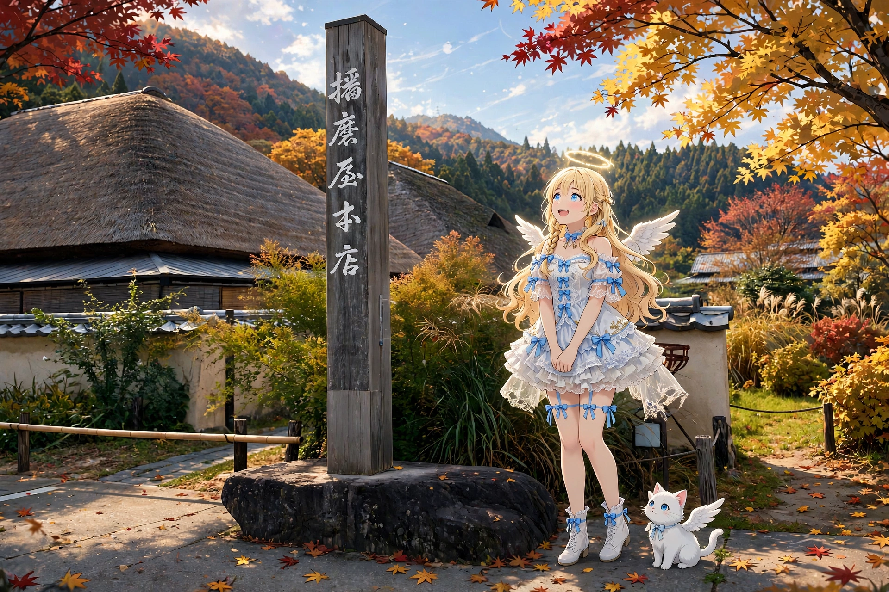
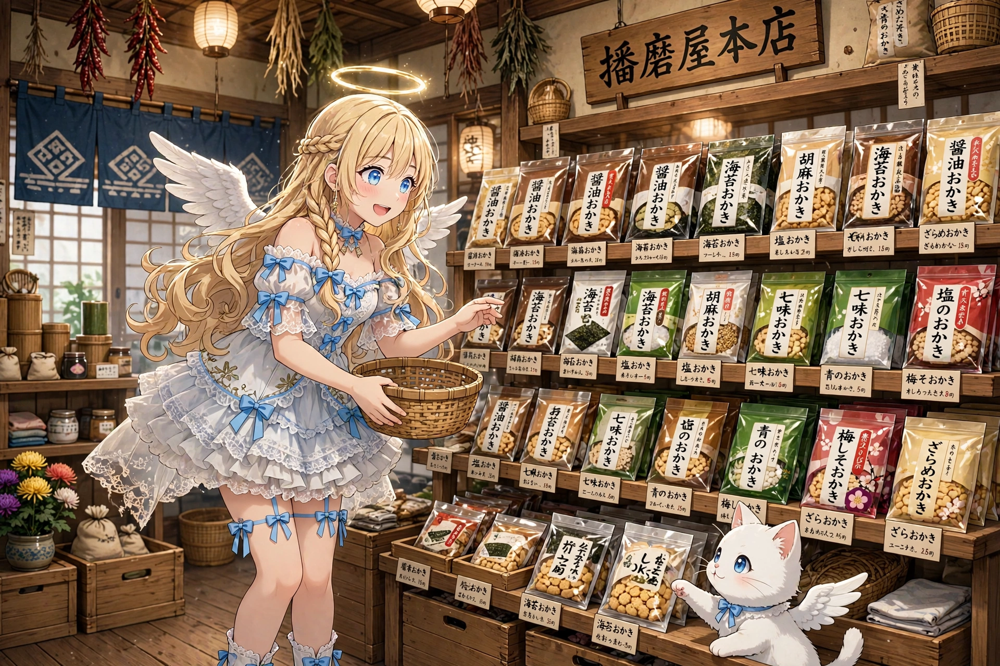
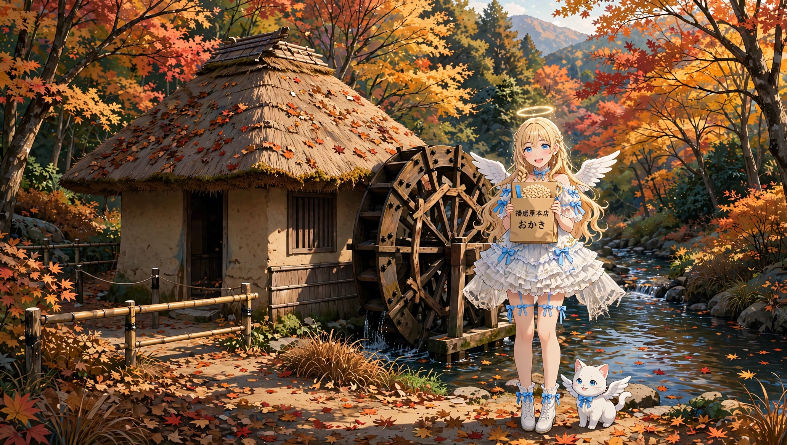
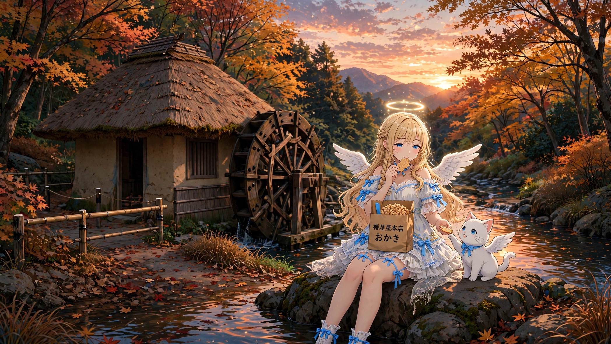

読み切り短編『水車とおかきと、秋の里』を公開しました
2026年11月24日
読み切り短編『水車とおかきと、秋の里』を公開しました。おかきを買いに山あいの里・播磨屋本店（生野総本店）を訪れたセラフィナとモコのお話です。
1. 山あいの総本店

その里は、山に抱かれていました。
日本橋の電気街から電車とバスを乗り継いで、ずいぶん遠くまで来たはずなのに、着いてみると空気がまるで違いました。土の匂い、川の匂い、そしてどこか懐かしい、藁の匂い。
石の台座の上に立つ木の看板には、白い文字で「播磨屋本店」と書かれていました。その奥には、茅葺き屋根の大きな建物。屋根の向こうには、紅葉に染まった山が重なっています。
「モコ、着きましたよ。ここが、播磨屋本店の生野総本店です」
「にゃーん」
今日の目的はひとつ。おかきを買うこと。ただそれだけのために、わたしはこんな山あいの里まで来てしまいました。でも、看板の前で深呼吸をしたら、遠回りじゃなかった気がしたのです。おいしいものの里は、きっとこういう顔をしているのですね。
2. おかきの山に迷う

店内に入って、わたしは固まりました。
醤油おかき、海苔おかき、胡麻おかき、塩のおかき、七味のおかき。棚という棚に、おかきの袋がずらり、ずらり、ずらり。色とりどりの袋が、まるで小さな畑みたいに並んでいます。
「ど、どうしましょうモコ。全部おいしそうで選べません……」
そのとき、足元でモコが一袋を前足でちょん、と指しました。
「にゃん」
「モコは醤油がいいんですね。……分かりました、醤油は確定です」
結局、籠の中身は増えていきました。醤油に、海苔に、胡麻に、塩。お土産の分と、自分の分と、モコが選んだ分。店員さんが笑って言いました。「初めての方は、みなさんそうなりますよ」って。その言葉に少しほっとして、少し誇らしくなりました。迷うのも、里の楽しみのうちなのですね。
3. 水車小屋の音

買い物を終えて外に出ると、敷地の奥から、不思議な音が聞こえてきました。
ぎし、ぎし。とん、とん。水の流れる音と一緒に、ゆっくりと何かが回る音。
小川のほとりに、小さな茅葺きの小屋がありました。土壁の小屋の脇で、大きな木の水車が、川の水を受けてゆっくり、ゆっくり回っています。竹の手すりの向こうで、紅葉が水面に映っていました。
水車は、お米を挽くためのものだそうです。電気も機械もない時代から、この川の力で、粉を挽いてきたのだとか。
おかきって、焼く前のずっと前から、こういう時間の中で育ってきたのですね。水の音、木の軋む音、山の風。袋の中のおかきが、急に少し、重たく感じました。里の時間ごと、買って帰るような気がして。
4. 夕日のおやつ

帰りのバスまで、少し時間がありました。
わたしは川辺の石に腰かけて、買ったばかりの袋をそっと開けました。モコが選んだ、醤油のおかきです。
ぱりっ。
香ばしい醤油の香りと、しっかりした歯ごたえ。夕日が山の端を橙色に染めて、水車は影の中でもまだ、ゆっくり回り続けています。
「モコの分も、ありますよ」
小さく割って差し出すと、モコは満足そうに目を細めました。……猫に醤油味は少し濃かったかもしれませんが、気持ちだけ、ということで。
日本橋の部屋に帰ったら、今日買ったおかきを並べて、少しずつ食べるのが楽しみです。一袋開けるたびに、この里の水の音を思い出すのでしょうね。
今日もおつかれさまです。
（了）